layout_heatmap() utilizes the grammar of graphics to
construct the heatmap and heatmap annotations. You can also use the
alias ggheatmap.
Input data
The data input can be a numeric or character vector, a data frame, and any other data which can be converted into a matrix. Simple vector will be converted into a one column matrix.
set.seed(123)
small_mat <- matrix(rnorm(81), nrow = 9)
rownames(small_mat) <- paste0("row", seq_len(nrow(small_mat)))
colnames(small_mat) <- paste0("column", seq_len(ncol(small_mat)))
ggheatmap(letters)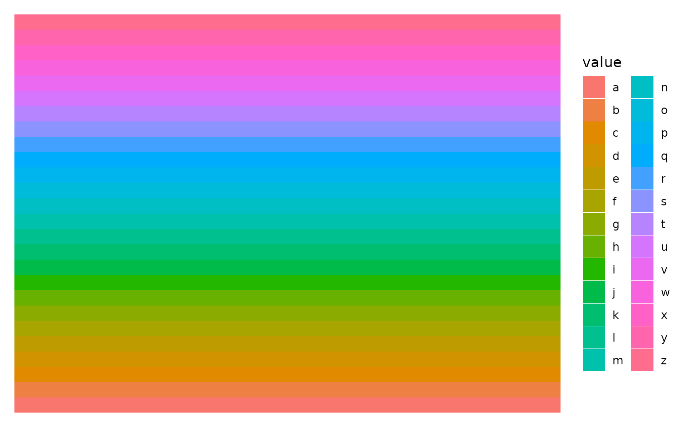
ggheatmap(1:10)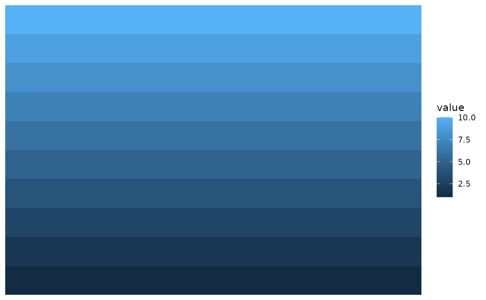
ggheatmap(small_mat)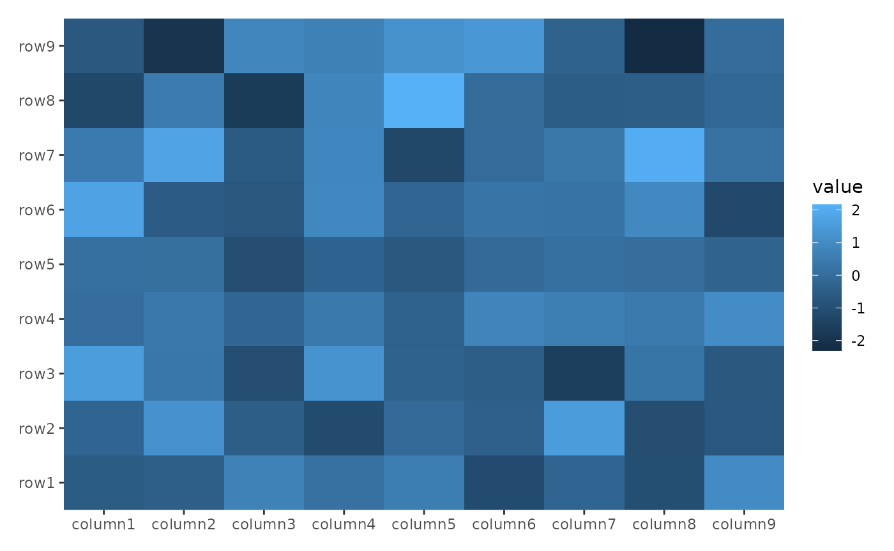
Heatmap body
For ggplot2 usage, the matrix input will be converted
into a long formated data frame when drawing. The default mapping will
use aes(.data$.x, .data$.y), but can be controlled using
mapping argument. The data in the underlying ggplot object
contains following columns:
.xpaneland.ypanel: the column and row panel.xand.y: thexandycoordinates.row_namesand.column_names: the row and column names of the original matrix (only applicable when names exist)..row_indexand.column_index: the row and column index of the original matrix.value: the actual matrix value.
If filling = TRUE, the following layer will be added
automatically:
geom_tile(
aes(.data$.x, .data$.y, fill = .data$value),
width = 1L, height = 1L
)
#> mapping: x = ~.data$.x, y = ~.data$.y, fill = ~.data$value
#> geom_tile: linejoin = mitre, na.rm = FALSE
#> stat_identity: na.rm = FALSE
#> position_identityIf you set filling = FALSE, a blank heamtap will be
drawn.
ggheatmap(small_mat, filling = FALSE)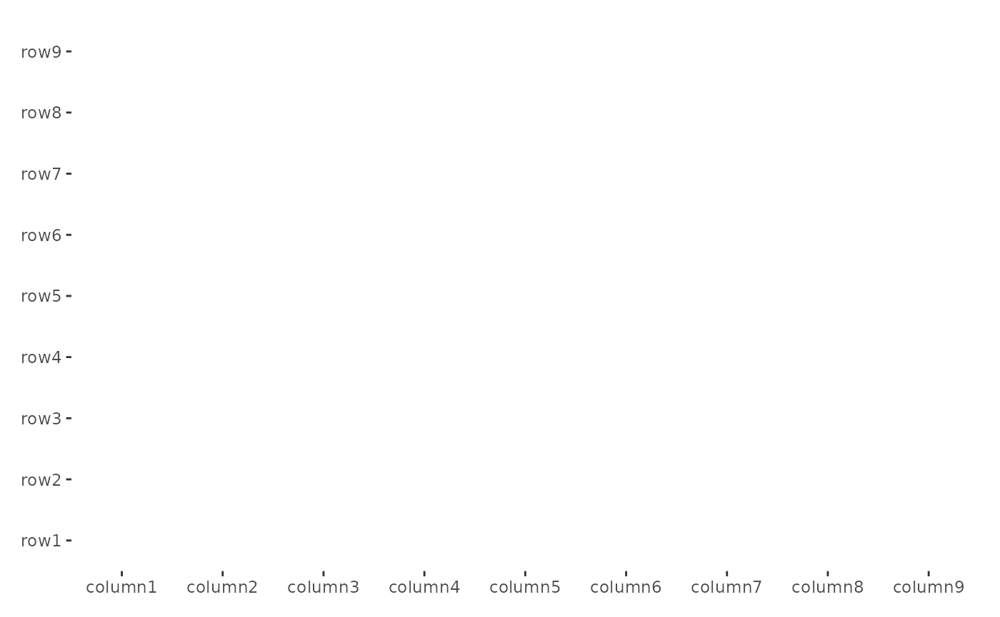
You can treat the LayerHeatmap object as a normal
ggplot2 object with a default mapping and
data. You can add ggplot2 elements as
usual.
ggheatmap(small_mat) + geom_point() + scale_fill_viridis_c()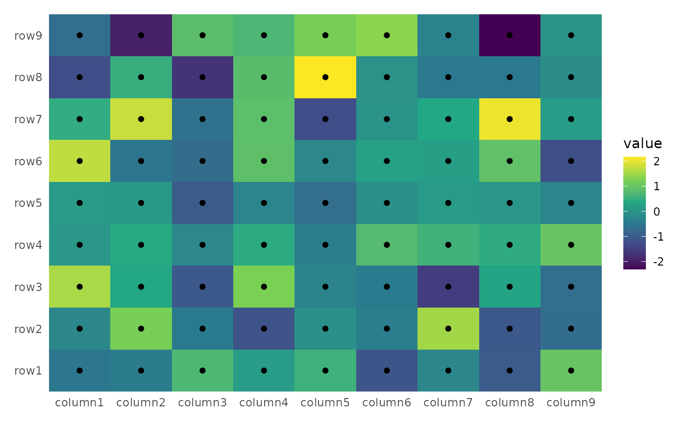
Position scales
For position scales, limits cannot be setted, and the
internal will always reset it as the default. This is required to align
the heatmap and annotation.
ggheatmap(small_mat) + scale_x_continuous(limits = c(0, 0))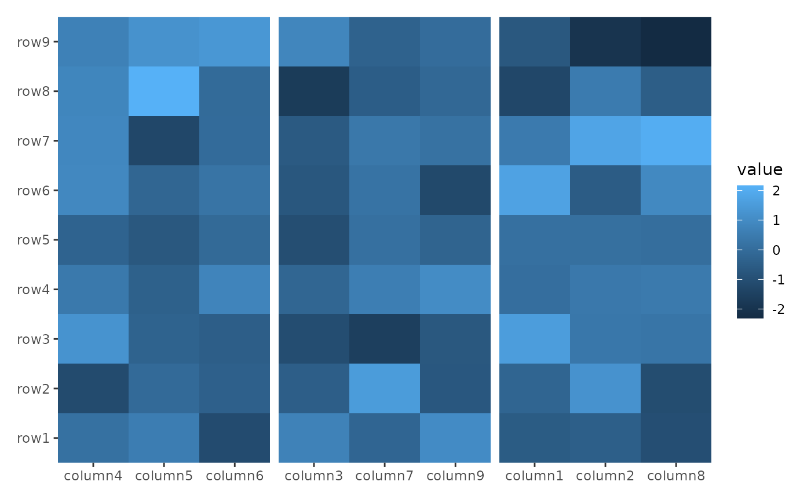
breaks and labels in the position scales
are handled in a similar manner of discrete scale, thought you can
provide as a continuous scale.
breaks should be one of:
- `NULL` for no breaks
- `waiver()` for the default breaks (the full data index or `NULL` if no
data names and `labels` is `waiver()`)
- A character vector of breaks (rownames / colunames of the matrix).
- A numeric vector of data index.
- A function that takes the data limits or the data index as input and
returns breaks as output. Also accepts rlang lambda function notation.
ggheatmap(small_mat) + scale_x_continuous(breaks = NULL)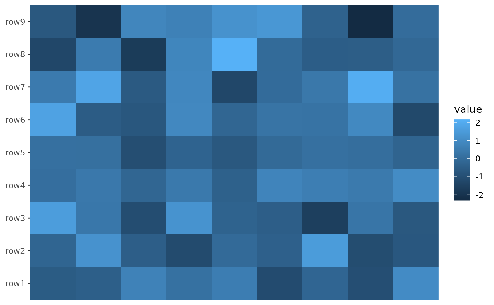
ggheatmap(small_mat) + scale_x_continuous()
no_names <- small_mat
colnames(no_names) <- NULL
ggheatmap(no_names) + scale_x_continuous()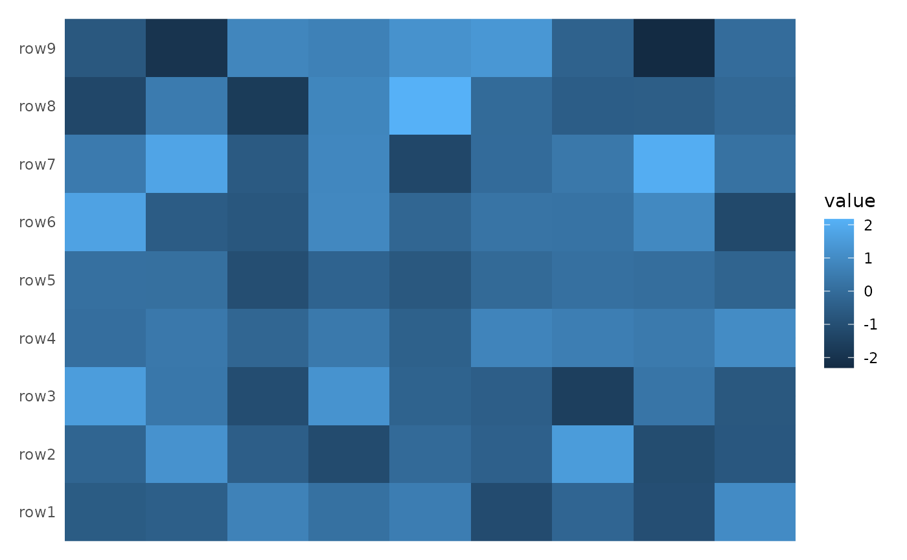
ggheatmap(small_mat) + scale_x_continuous(breaks = c("column3", "column5"))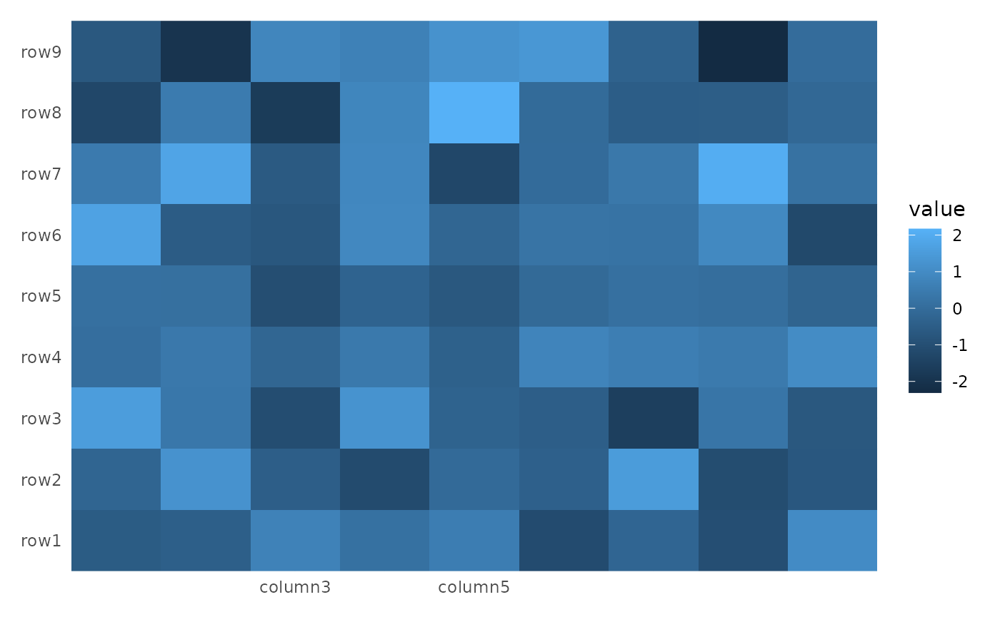
ggheatmap(small_mat) + scale_x_continuous(breaks = 5:6)labels should be one of:
- `NULL` for no labels
- `waiver()` for the default labels (data names)
- A character vector giving labels (must be same length as breaks)
- An expression vector (must be the same length as breaks). See `?plotmath`
for details.
- A function that takes the data names (or breaks if data has no names) as
input and returns labels as output. This can be also a rlang lambda
function.
ggheatmap(small_mat) + scale_x_continuous(labels = NULL)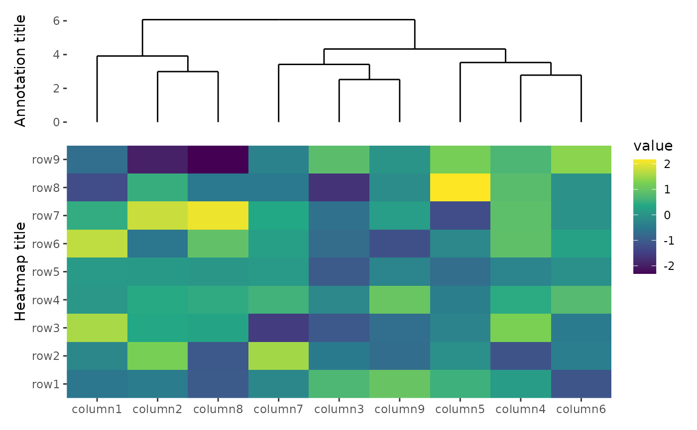
ggheatmap(small_mat) + scale_x_continuous()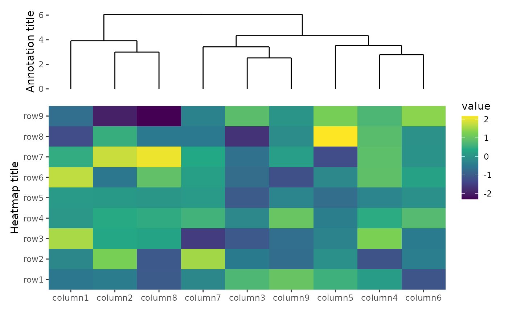
ggheatmap(small_mat) +
scale_x_continuous(labels = letters[seq_len(ncol(small_mat))])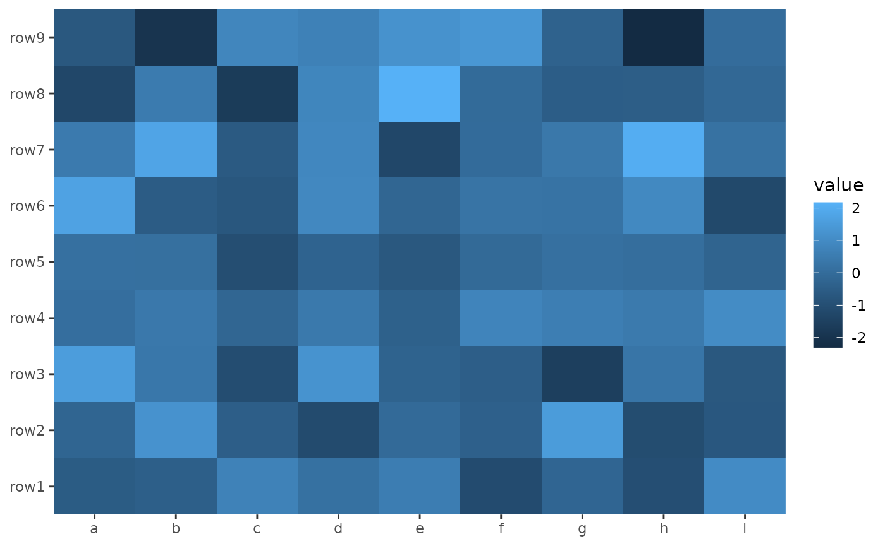
ggheatmap(small_mat) +
scale_x_continuous(breaks = c(3, 5), labels = c("a", "b"))breaks and labels argument will work the
same in both discrete scale and continuous scale. But note it’s hard to
match all discrete scale limits, for sometimes, you should manually
specify the expand argument.
I will provide an example of using a heatmap annotation. If you are
unfamiliar with adding heatmap annotations, there is no need to worry. I
will provide a more comprehensive explanation in the following section.
If you want to learn more about the align_* functions, try
to see vignette("align-layout") and
vignette("align-plot").
hmanno() indicates where the annotation was added.
align_dendro() will reorder the layout based on the
hierarchical clustering tree, and it’ll also draw the dendrogram
tree.
In following example, we must add expand argument to
match the heatmap and the tree.
ggheatmap(small_mat) +
scale_x_discrete(breaks = c(3, 5), labels = c("a", "b")) +
hmanno("t") +
align_dendro() +
scale_x_discrete()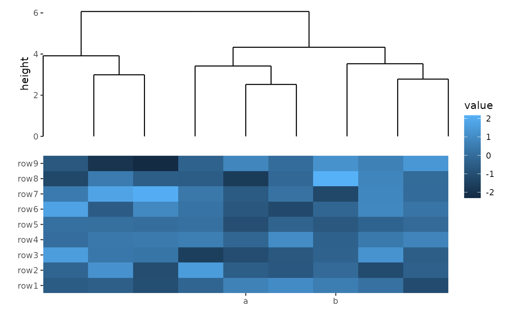
ggheatmap(small_mat) +
scale_x_discrete(breaks = c(3, 5), labels = c("a", "b")) +
hmanno("t") +
align_dendro() +
scale_x_discrete(expand = expansion(add = 0.5))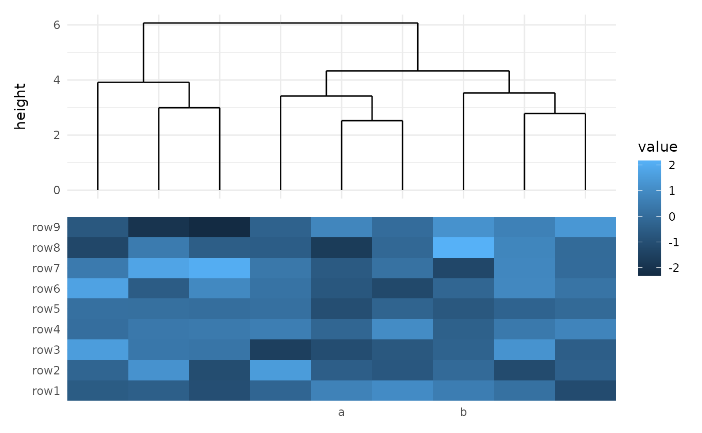
Indeed, you can use the default scale for the dendrogram directly. The layout always sets the appropriate limits for the continuous scale, which is also the default scale.
ggheatmap(small_mat) +
scale_x_discrete(breaks = c(3, 5), labels = c("a", "b")) +
hmanno("t") +
align_dendro()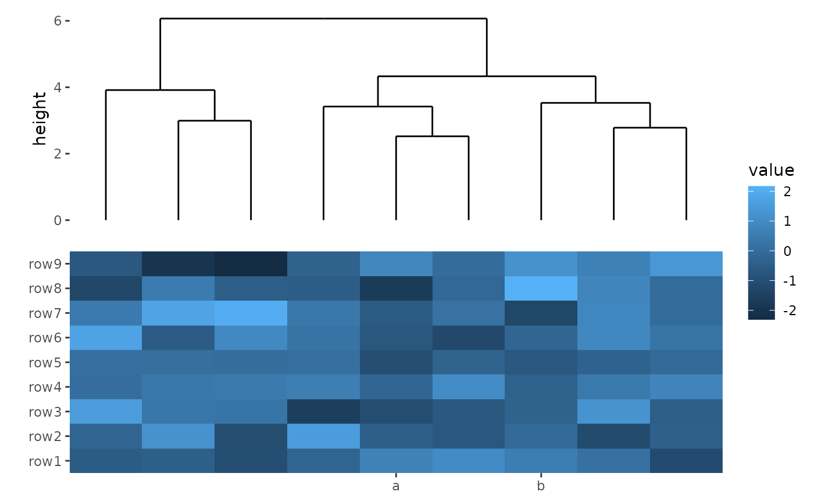
One useful function when you should use the discrete scale is the
ambiguous orientation in geoms. Some geoms use the discrete
axis as the main orientation like ggplot2::geom_bar() and
ggplot2::geom_box(), but by default we always use the
continuous scale. So you must manually provide an
orientation argument for these geoms or manually set the
discrete scale in the horizontal layout (including left and right
heatmap annotation).
ggalign() is similar to ggplot in that it
initializes a plot data and mapping. The data input can be
a matrix, a data frame, or a simple vector that will be converted into a
one-column matrix, and can inherit from the layout data. When a plot is
initialized, we can add other ggplot2 elements for it. You can see
ggplot2 specification in ?align_gg for
details.
In the following example, geom_bar won’t work since the
ambiguous orientation.
ggheatmap(small_mat) +
hmanno("l") +
ggalign() +
geom_bar(aes(x = value), stat = "identity") +
theme(axis.text.x = element_text(angle = -60, hjust = 0))
#> Warning: Removed 81 rows containing missing values or values outside the scale range
#> (`geom_bar()`).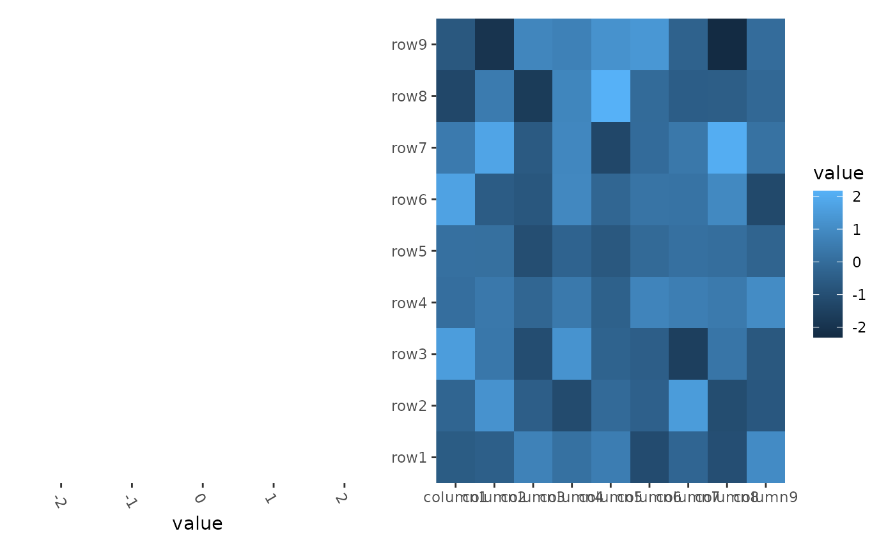
Try to provide the orientation argument or set the scale
into discrete.
ggheatmap(small_mat) +
hmanno("l") +
ggalign() +
geom_bar(aes(x = value), stat = "identity", orientation = "y") +
theme(axis.text.x = element_text(angle = -60, hjust = 0))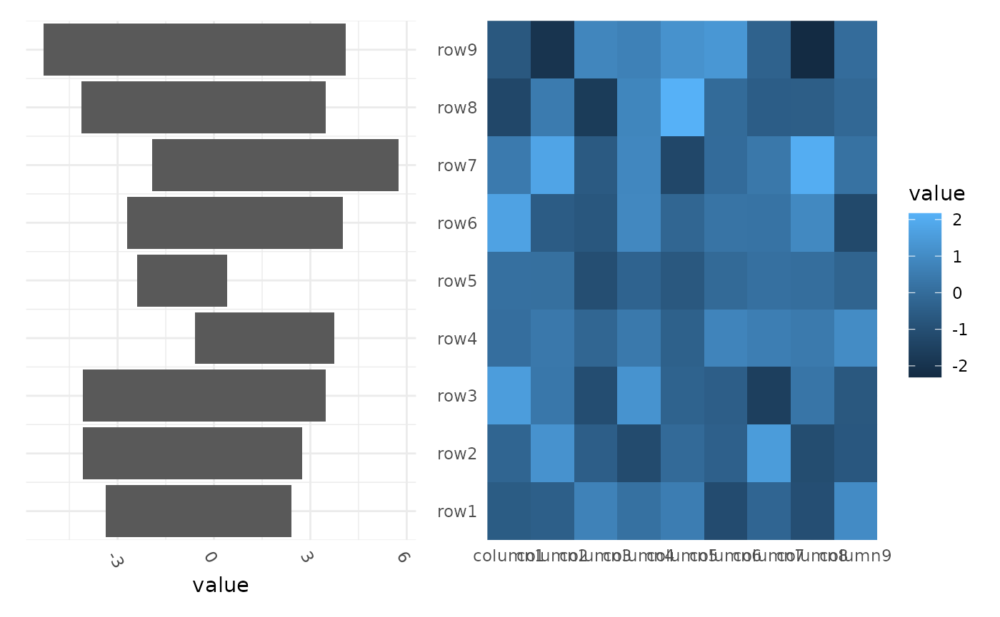
ggheatmap(small_mat) +
hmanno("l") +
ggalign() +
geom_bar(aes(x = value), stat = "identity") +
scale_y_discrete() +
theme(axis.text.x = element_text(angle = -60, hjust = 0))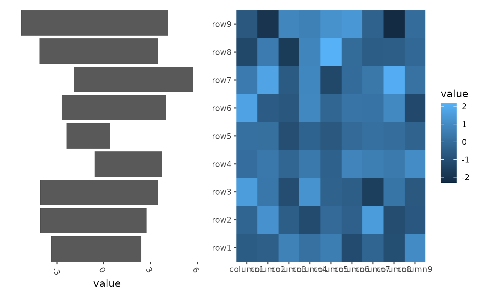
Both breaks and labels should be provided
in the original scale of the raw matrix, the internal will reorder them
accordingly if you reorder the heatmap rows/columns.
align_reorder will reorder the heatmap rows/columns
based on the weights returned from fun argument. Here we
reorder the heatmap columns by the means.
index <- order(colMeans(small_mat))
xlabels <- letters[seq_len(ncol(small_mat))]
print(xlabels[index])
#> [1] "c" "h" "i" "g" "f" "e" "a" "b" "d"
# we provide the labels in the original order, the layout will reorder them.
ggheatmap(small_mat) +
scale_x_continuous(labels = xlabels) +
hmanno("t") +
align_reorder()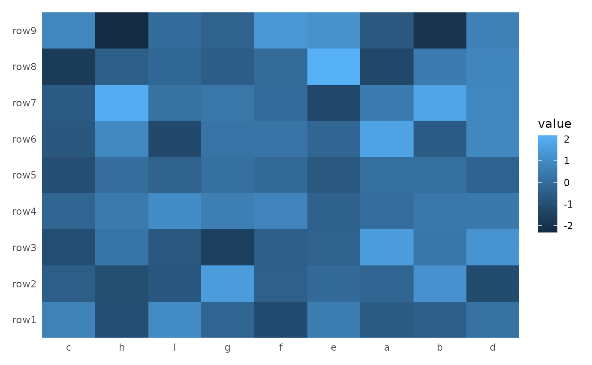
Facets and Panel titles
When working with facets, manual configuration of panel using the
facet_* function is not possible since the internal will
use facet_grid to set the row/column groups controlled by
heatmap annotation. However, you can provide facet_grid()
or facet_null() (if no panel) to control other arguments
except rows and cols. A common usage case is
to change the panel strip text.
The default theme in this package will always remove the panel strip
text, you can override this behaviour with
theme(strip.text = element_text()). This allows us to add
the panel title in heatmaps or any heatmap annotation with plot.
ggheatmap(small_mat) +
facet_grid(labeller = labeller(.column_panel = function(x) letters[as.integer(x)])) +
theme(strip.text = element_text()) +
hmanno("top") +
align_kmeans(centers = 3L)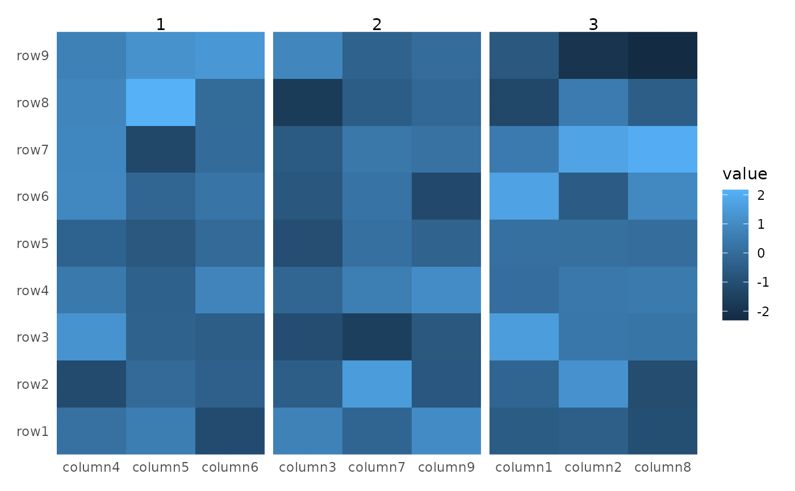
Heatmap annotations
Heatmap annotations add extra information to the rows or columns of
your heatmap. Annotations can be positioned at the top,
left, bottom, or right of the
heatmap, and this positioning is referred to as the active context in
ggheatmap().
By default, the ggheatmap() won’t initialize any active
context, so if you want to add something into the heatmap annotations,
you need to use hmanno() to specify where the annotation
should be added.
ggheatmap(small_mat) +
hmanno("t") +
align_kmeans(3L)When you set an active context with hmanno(), all
subsequent additions will be directed to this annotation. This allows
you to customize the heatmap by adding different types of plots.
Annotation is represented as layout_stack() object, which
can contain multiple plots. You can also specify which plot context of
the annotation to use with the what argument in
hmanno(). However, this is usually not necessary as each
align_* function has a set_context argument
that controls whether it sets the active context to the
Align object when added to the stack layout:
- For
align_*functions that draw something (e.g.,align_dendro(),ggalign()),set_contextis set toTRUEby default. - For
align_*functions that do not draw anything (e.g.,align_group(),align_kmeans()),set_contextis set toFALSEby default.
ggheatmap(small_mat) +
theme(axis.text.x = element_text(angle = -60, hjust = 0)) +
hmanno("r") +
align_dendro(k = 3L) +
geom_point(aes(color = factor(branch)))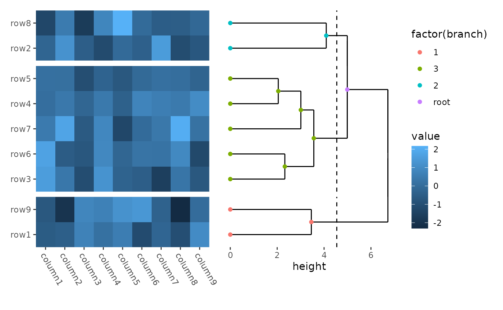
In this example:
-
hmanno("r")specifies that the annotation should be positioned on the right of the heatmap. -
align_dendro(k = 3L)adds a dendrogram to this right-side annotation context and sets it as the active plot in the annotation stack. -
geom_point(aes(color = factor(branch)))is then added to this active plot within the annotation stack, allowing you to include additional visual elements.
If you set set_context = FALSE, this will be an error,
since no active ggplot object can be found.
ggheatmap(small_mat) +
hmanno("r") +
align_dendro(k = 3L, set_context = FALSE) +
geom_point(aes(color = factor(branch)))
#> Error in `stack_add_ggelement()`:
#> ! Cannot add `geom_point(aes(color = factor(branch)))` into the heatmap
#> right annotation
#> ℹ No active <ggplot> object
#> ℹ Did you forget to initialize a <ggplot> object with `ggalign()`?Control size
The different ggplot objects were combined using the
patchwork package. Internally, the
build_patchwork() function was used to construct and merge
all the ggplot objects into a single patchwork
object.
ggheatmap() has width and
height to control the relative (you can also provide a unit
object) width and height of the heatmap body. hmanno()
function have a size argument to control the relative width
(left and right annotation) or height (top and bottom annotation) of the
whole annotation. anno_* function has a size
argument to control the relative width (left and right annotation) or
height (top and bottom annotation) of the single annotation in the whole
annotation stack.
ggheatmap(small_mat) +
scale_fill_viridis_c() +
hmanno("t", size = unit(20, "mm")) +
ggalign(data = rowSums) +
geom_bar(aes(y = value, fill = .x), stat = "identity") +
hmanno("l", size = 0.2) +
ggalign(aes(x = value), data = rowSums) +
geom_bar(
aes(y = .y, fill = factor(.y)),
stat = "identity",
orientation = "y"
) +
scale_fill_brewer(palette = "Set1", guide = "none") +
scale_x_reverse() +
theme(axis.text.x = element_text(angle = -60, hjust = 0))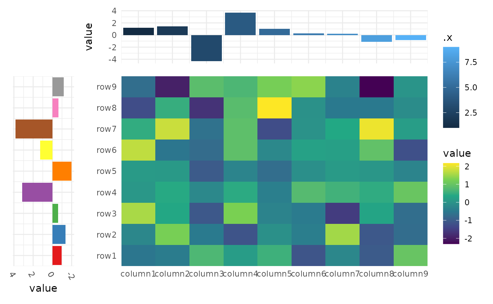
Session information
sessionInfo()
#> R version 4.4.1 (2024-06-14)
#> Platform: x86_64-pc-linux-gnu
#> Running under: Ubuntu 22.04.4 LTS
#>
#> Matrix products: default
#> BLAS: /usr/lib/x86_64-linux-gnu/openblas-pthread/libblas.so.3
#> LAPACK: /usr/lib/x86_64-linux-gnu/openblas-pthread/libopenblasp-r0.3.20.so; LAPACK version 3.10.0
#>
#> locale:
#> [1] LC_CTYPE=C.UTF-8 LC_NUMERIC=C LC_TIME=C.UTF-8
#> [4] LC_COLLATE=C.UTF-8 LC_MONETARY=C.UTF-8 LC_MESSAGES=C.UTF-8
#> [7] LC_PAPER=C.UTF-8 LC_NAME=C LC_ADDRESS=C
#> [10] LC_TELEPHONE=C LC_MEASUREMENT=C.UTF-8 LC_IDENTIFICATION=C
#>
#> time zone: UTC
#> tzcode source: system (glibc)
#>
#> attached base packages:
#> [1] stats graphics grDevices utils datasets methods base
#>
#> other attached packages:
#> [1] ggalign_0.0.1 ggplot2_3.5.1
#>
#> loaded via a namespace (and not attached):
#> [1] gtable_0.3.5 jsonlite_1.8.8 highr_0.11 dplyr_1.1.4
#> [5] compiler_4.4.1 tidyselect_1.2.1 tidyr_1.3.1 jquerylib_0.1.4
#> [9] systemfonts_1.1.0 scales_1.3.0 textshaping_0.4.0 ggh4x_0.2.8
#> [13] yaml_2.3.10 fastmap_1.2.0 R6_2.5.1 labeling_0.4.3
#> [17] generics_0.1.3 knitr_1.48 tibble_3.2.1 desc_1.4.3
#> [21] munsell_0.5.1 RColorBrewer_1.1-3 bslib_0.8.0 pillar_1.9.0
#> [25] rlang_1.1.4 utf8_1.2.4 cachem_1.1.0 xfun_0.47
#> [29] fs_1.6.4 sass_0.4.9 viridisLite_0.4.2 cli_3.6.3
#> [33] pkgdown_2.1.0 withr_3.0.1 magrittr_2.0.3 digest_0.6.37
#> [37] grid_4.4.1 lifecycle_1.0.4 vctrs_0.6.5 evaluate_0.24.0
#> [41] glue_1.7.0 farver_2.1.2 ragg_1.3.2 fansi_1.0.6
#> [45] colorspace_2.1-1 rmarkdown_2.28 purrr_1.0.2 tools_4.4.1
#> [49] pkgconfig_2.0.3 htmltools_0.5.8.1